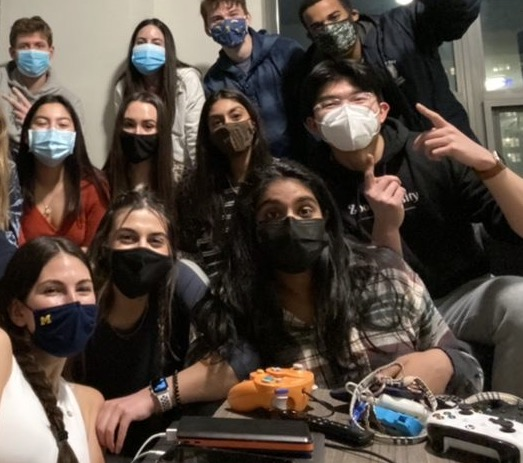

School Life
BBA & BSI Sophomore at the University of Michigan
Blueprints for Pangaea

Blueprints for Pangaea is a non-profit organization with chapters all across the country that redistributes excess medical supplies from large hospital systems to local and global communities in need. I am currently the VP of Expansion. In this role, I oversee 2 internal projects and manage the expansion team to ensure chapter stability.
Learn More »MECC Consulting Group

As a consultant at MECC, I've worked on two different projects: one with a local health center and one with a bakery franchise. Both projects have been strategy focused and research heavy. The first project dealt more with data analytics and the second project was more marketing focused, through both a social media and graphic design lens.
Learn More »TEDXUofM

I've adored TED talks ever since I was young, and at TEDXUofM, I was able to help put on a conference to bring that same joy to those who attended the conference. I helped design the theme reveal and interactive labs and also worked with one of our performers.
Learn More »Phi Chi Theta
I'm currently pledging PCT, a business fraternity. Through this process, I've grown immensely as a person, by building my networking skills, developing professional knowledge, and being a part of a wonderful family on campus. This process has pushed me to manage my time effectively, while building new relationships.
Learn More »Club Tennis
I've been playing for as long as I can remember. Club tennis is a wonderful co-ed team, and I've built so many fantastic memories with my fellow teammates.
Learn More »